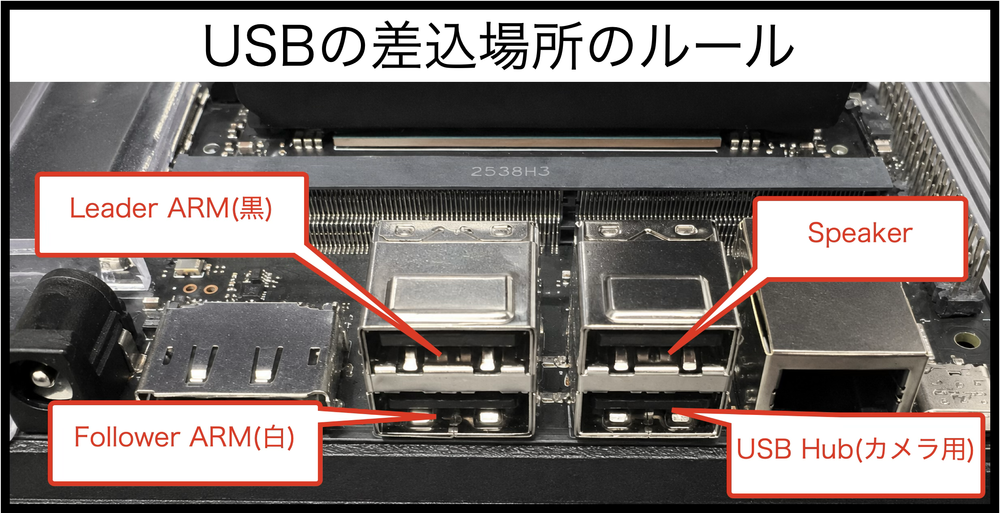

接続の確認
1. 接続確認
接続先が下記の通りになっていることを確認してください。

起動後にUSBを差し込むと認識番号が変わってしまうので、指定先にUSBを差し込み、Jetsonを再起動してください。
2. SO-101のポート確認
SO-101は通常、/dev/ttyACM0、/dev/ttyACM1、/dev/ttyUSB0などで認識されます。
1 2 | |
1 2 | |
3. カメラ確認
OpenCVで使用可能なカメラを探します。
1 | |
Jetsonで/dev/video0を使用する場合は、640×480、MJPG、30fpsに対応しているか確認します。
1 2 3 | |
Note
以下のJetson用コマンドは/dev/video0、640×480、MJPG、30fpsを前提にしています。別のカメラを使用する場合は、index_or_path、width、height、fps、fourccを検出結果に合わせて変更してください。